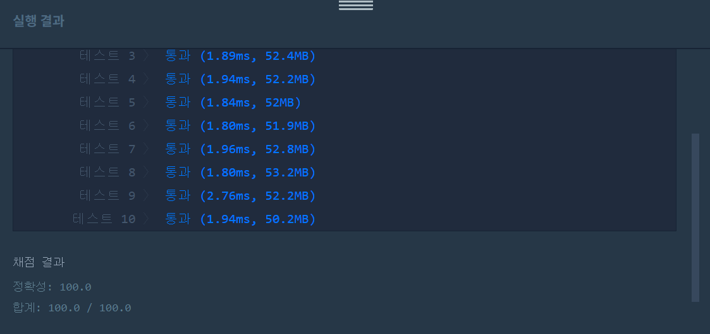
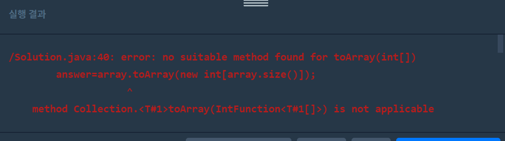

👀 문제
https://programmers.co.kr/learn/courses/30/lessons/42586
👊 첫 번째 도전
1. 설계
- 소요되는 날 계산해서 Queue에 저장한다.
- temp에 큐의 맨 앞 값 넣는다.
- temp보다 뒤에가 작으면 cnt++, 그 값을 삭제한다.
- temp보다 큰거 발견하면 그자리에서 끝, cnt를 answer에 저장한다.
2. 구현
1
2
3
4
5
6
7
8
9
10
11
12
13
14
15
16
17
18
19
20
21
22
23
24
25
26
27
28
29
30
31
32
33
34
35
36
37
38
39
40
41
42
43
44
45
46
47
48
49
import java.lang.Math;
import java.util.Queue;
import java.util.LinkedList;
import java.util.ArrayList;
import java.util.List;
/**
*
* @author HEESOO
*
*/
class Solution {
public int[] solution(int[] progresses, int[] speeds) {
int[] answer = {};
int day;
int temp;
int cnt=1;
Queue<Integer> q=new LinkedList<Integer>();
ArrayList<Integer> array=new ArrayList<Integer>();
//소요되는 날 계산 후 큐에 저장
for(int i=0;i<progresses.length;i++){
day=(int)Math.ceil((100-progresses[i])/(double)speeds[i]);
q.offer(day);
}
while(!q.isEmpty()){//큐를 처음부터 순회, 기준값 temp설정
temp=q.poll();
//temp뒤의 값을 비교하며 카운트
while(!q.isEmpty()){
if(temp<q.peek()){
break;
}
else{
cnt++;
q.poll();
}
}
array.add(cnt);
cnt=1;
}
//ArrayList의 값 복사
answer=new int[array.size()];
for(int i=0;i<array.size();i++){
answer[i]=array.get(i);
}
return answer;
}
}
- int day: 기능별로 작업 시간을 계산한다. 이때 소수점까지 필요하므로 speeds를 실수형인 double로 형변환, Math 라이브러리의 ceil()메소드를 이용하여 값을 올림한 후 다시 int형으로 변환한다.
- int temp: 큐의 첫 번째 값을 저장하여 뒤의 값들과 비교한다.
- int cnt: 기준점인 temp와 함께 배포될 수 있는 갯수를 저장한다. 이때 기준점인 temp의 값을 가지고 있으므로 초기값은 1이다.
- Queue
q: 기능별 day를 저장하는 자료구조이다. - ArrayList
array: 날마다 배포되는 기능 갯수인 cnt를 저장한다. cnt의 값은 유동적이기 때문에 선언시 크기를 지정하지 않아도 되는 ArrayList를 선택하였다.
3. 결과
 🤟 성공 🤟
4. 참고
 마지막 ArrayList array를 배열 answer로 복사하는 과정에서 List 라이브러리의 toArray()메소드를 사용하려고 했는데, 이 경우 ArrayList와 배열 모두 Integer로 선언되어야 한다. 나의 경우 배열 answer이 int형으로 선언되었기 때문에 그냥 for문으로 값을 복사해주었다.
👏 해결 완료!
오랜만에 나름 쉬운 문제를 풀어서 기분이 좋았다. 문제 유형이 스택과 큐라서 이를 이용해야겠다고 파악할 수 있었지만, 없었다면 배열을 썼을 것 같다. 문제를 보고 어떤 자료구조를 택할지 연습하는 법을 길러야겠다.